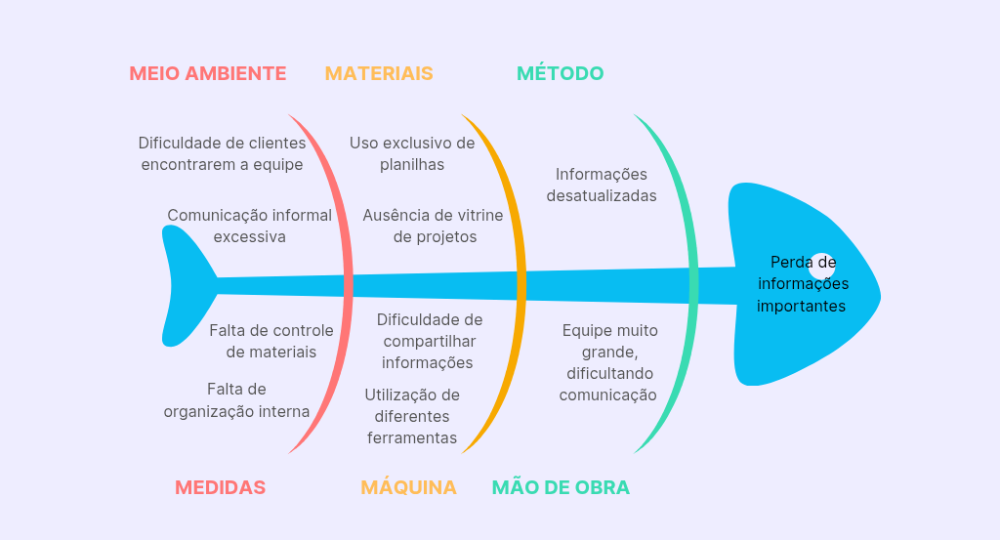

Cenário atual do Cliente e do Negócio
üíº Introdu√ß√£o ao Neg√≥cio e Contexto
A Capital Rocket Team (CRT) é uma equipe de competição de aeromodelismo da Universidade de Brasília (UnB). Fundada no ano de 2015, tem como objetivo representar a universidade em competições nacionais e internacionais, além de promover a capacitação dos estudantes e desenvolvimento dos subsistemas com tecnologia nacional relativas à foguetes.
A equipe conta com diversas conquistas ao longo de sua jornada, como o 1° e 2° lugar em 2022 e 2021 na Latin American Space Challenge (LASC), 2ª maior competição experimental de engenharia de foguetes do mundo. A CRT também se destaca por ser a única equipe da América Latina a lançar um foguete de propulsão híbrida, foco principal da equipe.
Apesar de todas as suas conquistas, a equipe enfrenta alguns problemas de divulgação dos seus projetos e na gestão de pessoas e controle de estoques.
üí° Identifica√ß√£o da Oportunidade ou Problema
A principal oportunidade identificada para a equipe é a facilitação de divulgação do seu trabalho, uma vez que atualmente suas informações e projetos estão espalhados por diferentes meios de comunicação, o que dificulta que patrocinadores em potencial tenham acesso fácil e integral ao seu trabalho.
No gerenciamento interno, a oportunidade principal é a utilização de um sistema centralizado que facilite o acompanhamento individual dos membros (como faltas, advertências e strikes), que atualmente é feito por planilhas, além do controle de estoques, onde os integrantes da equipe tenham acesso aos materiais disponíveis e solicitem a sua utilização ou realizem pedidos dos outros, que atualmente é feita pessoalmente.
A figura a seguir apresenta o diagrama de Ishikawa, contendo as causas e o problema da CRT.

Figura 1: Diagrama de Ishikawa
⛰️ Desafios do Projeto
O principal desafio do projeto será integrar seus dados ao novo sistema de gerenciamento, uma vez que a equipe mantêm grande parte de suas informações em planilhas, além da equipe possuir atualmente 55 membros.
Outro desafio é que a equipe já possuía um site anterior, porém o responsável por manter o domínio teve um problema e acabou apagando todas as informações que estavam no ar. Embora ainda possuam o domínio, a equipe não tem o conhecimento necessário para manter o site. Por isso, o domínio deve ser reaproveitado e o novo projeto deve ser de fácil manutenção, permitindo que a própria equipe possa gerenciá-lo.
üë§ Segmenta√ß√£o de clientes
A equipe tem, em geral, três tipos de clientes:
- Entusiastas: Pessoas de 18 à 30 anos, amantes de tecnologia e engenharia aeroespacial, que acompanham e apoiam o projeto;
- Patrocinadores: Empresas que produzem materiais do setor (como fibra de vidro) ou entusiastas que patrocinam a equipe por conta de sua relevante atuação na área;
- Membros: Estudantes da Universidade de Brasília (UnB), com idade entre 18 a 25 anos, que se voluntariam com o objetivo de competir e aprender.
üìú Hist√≥rico de Versão
| Data | Versão | Descrição | Autor |
|---|---|---|---|
| 06/04/25 | 1.0 | Primeira versão | Sophia |
| 02/05/25 | 1.1 | Correção do diagrama de ishikawa | Sophia |
| 02/05/25 | 1.2 | Detalhamento dos clientes | Sophia |
| 13/07/25 | 2.0 | Refinando visualmente o documento | Wanjo Christopher |